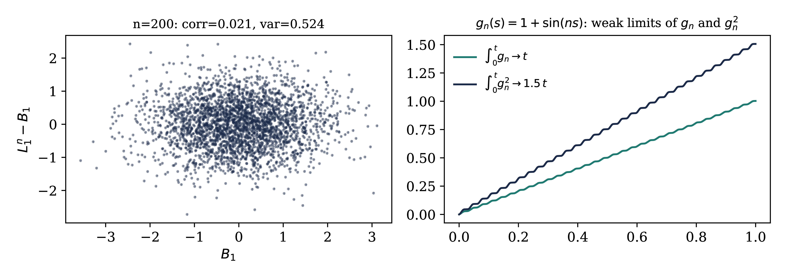

A Constructive Introduction to Quantum Field Theory
\(\Phi^4_3\) on the torus II: a priori estimates and the limit
Massimiliano Gubinelli | University of Oxford
Joint work with Sarah-Jean Meyer, with the use of AI
SISSA lectures, Lecture 6 (provisional) —
notes: Lecture 6, §§13–18
Lattice:
Free operators: resolution \(q \in [q_0, \infty)\), \(K_q = q - \Delta\) (precision), \(C_q = K_q^{- 1}\) (unresolved covariance), \(\|C_q \|_{p \to p} = q^{- 1}\); \(C = C_{q_0}\) the Gaussian reference, \(K_{q_0} = q_0 - \Delta\) the free field operator, \(q_0 > 0\) the reference mass.
Couplings: \(\gamma = 3 \lambda\), \(g_q = \gamma q^{- 1 / 2}\), \(r_q = (q / \gamma)^{1 / 2}\) (cube \(\asymp K_q\)), auxiliary scale \(q_{\ast}\).
Processes: Polchinski process \(\Phi_q\) (\(\Phi_{q_0} = 0\)), innovation \(W\), bridge noise \(B\), forecast \(\psi_q =\mathbb{E}_q \Phi_{\infty}\), \(\text{Cov}_q\) its conditional covariance.
Forces: exact \(\mathcal{F}_q\) (\(K_q \Phi_q = K_q \psi_q +\mathcal{F}_q (\psi_q)\)), explicit \(\bar{\mathcal{F}}_q (y) = \frac{\gamma}{3} y^3 + M_q y + \tilde{\ell}_q (y)\); response \(H_q = (K_q + D \bar{\mathcal{F}}_q)^{- 1}\), defect drift \(b_q\), \(\Xi_q = \text{Cov}_q - H_q (Y_q)\), coordinate correction \(\varrho_q\).
At each lattice \(N\), exactly (Lecture 5):
Coercivity: \(H_q (y) \asymp (K_q + \gamma y^2)^{- 1}\), \(\|H_q \|_{p \to p} \leqslant (1 + \varepsilon_q) / q\), \(\varepsilon_q = C (g_q + g_q^2)\).
Source: \(\|b^{\text{b}}_q \|_{\infty} \leqslant C \gamma^{7 / 2} q^{- 5 / 2}\), \(\|b^{\text{l}}_q (y)\|_2^2 \leqslant C \gamma^4 q^{- 5} \|t_q (y)\|_6^6\).
Coordinates: \(K_q (Y_q + \varrho_q (Y_q)) + \frac{\gamma}{3} Y_q^3 = K_q \Phi_q\), \(\|D \varrho_q \|_{p \to p} \leqslant \varepsilon_q\).
Goal
\(Z\) small and \(Y\) rarely at large fields, uniformly in \(N\). Neither equation can be estimated alone.
Usual (Ma–Yong): Lipschitz coefficients, Itô on \(\|Z\|^2\) and Gronwall; close on a short interval or under monotonicity.
Here: infinite interval, coefficients not uniformly Lipschitz, the coupling is not small. Instead we use structure:
the backward equation is linear in \(Z\) given \(Y\): a conditional representation with an explicit propagator;
the forward equation is, by the field equation of Lecture 4, a cubic elliptic equation at each resolution: coercive, estimated pathwise;
the two estimates are linked by two weighted energies with matched weights.
At fixed \(N, T\) all moments are finite (finite dimensions): used only to justify absorptions. Ma–Yong 1999
The energies
Lecture 6
Lecture 5: \(\Phi_q = (q - q_0) C_q \Phi_{\infty} + C_q B_{q - q_0}\), a noisy measurement. Since \(\psi_q =\mathbb{E}_q \Phi_{\infty}\),
the noise observable of Lecture 4 is the filtered measurement noise.
Lemma. For convex \(\Psi\), \(\mathbb{E} \Psi (\eta_q) \leqslant \mathbb{E} \Psi (B_{q - q_0})\), whatever the interaction. So \(\zeta_q = C_q \eta_q\) has
Proof: conditional Jensen. One line.
\(\zeta\) is not Gaussian, but it has the tails of the free field, uniformly in \(N\) and in the interaction.
Lecture 4, forecast form, in this profile: \(K_{q_0} \psi_q +\mathcal{F}_q (\psi_q) = \eta_q\), with the exact (unknown) force. Explicit force \(\bar{\mathcal{F}}_q = K_q \varrho_q + \frac{\gamma}{3} y^3\), \(\psi = Y + Z\):
Elliptic at each \(q\), no memory, pathwise; coercivity from the explicit cube.
The backward equation enters only through \((q - q_0) Z_q\).
Pointwise bounds need a smooth noise: \(\zeta = C_q \eta\), \(V = Y + \varrho (Y) - \zeta\),
Mass only \(q_0\): all the coercivity comes from the cube.
Thresholds: \(w_q = \text{sgn} (V_q) \left( |V_q | - \tfrac{3}{4} r_q \right)_+, \qquad t_q = Y_q \mathbb{1}_{|Y_q | > r_q}, \qquad \xi_q = \zeta_q \mathbb{1}_{| \zeta_q | > r_q / 32}\).
| quantity | weight | reason |
| \(\|Z_q \|^2\) | \(q^{1 / 2}\) | forcing: \(q^{- 3 / 2} \cdot \gamma^{- 1} q^2 \|Z\|_2^2\) |
| \(\gamma \|t_q \|_6^6\) | \(q^{- 3 / 2}\) | \(q^{7 / 2} \|b^{\text{l}} \|^2 \leqslant C \gamma^3 \cdot \gamma q^{- 3 / 2} \|t\|_6^6\) |
| \(\|b^{\text{l}}_q \|^2\) | \(q^{7 / 2}\) | propagator \(s / q\), \(\int_q^{\infty} s^{- 3 / 2} = 2 q^{- 1 / 2}\) |
Only thresholded sixth powers: \(\mathbb{E} \| \zeta_q \|_6^6 \sim q^{3 / 2}\) would give \(G_T \sim \gamma N^2\).
Forward coercivity
Lecture 6
Lemma. (scalar forward coercivity) If \(a \geqslant 0\), \(0 \leqslant p \leqslant q\) and \(av + \frac{\gamma}{3} (v + g)^3 = p (g + z)\), then, with \(r = (q / \gamma)^{1 / 2}\),
where \(w =\operatorname{sgn} (v) (|v| - \frac{3}{4} r)_+\), \(\xi = g \mathbb{1}_{|g| > r / 32}\); and \(|t| \leqslant \frac{32}{7} (|w| + | \xi |)\).
The excess is controlled at each resolution separately by the noise tails and by the error \(Z\).
No smallness of the coupling, and no integration in \(q\): multiply by \(q^{- 3 / 2}\) only to match the energies.
Where \(w \neq 0\): \(|v| = |w| + \frac{3}{4} r\), same sign, so \(avw^3 \geqslant 0\).
Cube. \(\operatorname{sgn} (w) (v + g) \geqslant |w| + \frac{11}{16} r - | \xi |\), and \(\gamma r^2 = q\):
Noise. \(pgw^3 \leqslant \frac{qr}{32} |w|^3 + q | \xi | |w|^3\): the first term is absorbed by the cube, and \(q | \xi | |w|^3 \leqslant \frac{q}{8} w^4 + 54 q \xi^4\).
Error. \(q |z| |w|^3 \leqslant \frac{\gamma}{48} w^6 + \frac{12}{\gamma} q^2 z^2\).
Above the threshold the cube provides a sixth power, a mass \(q\) and a cubic term which dominates the noise below the threshold.
For \(x, \rho, u, r \geqslant 0\):
Proof. \(\frac{1}{4} x^3 + 64 \rho^3 - 3 x^2 \rho = \frac{1}{4} (x - 8 \rho)^2 (x + 4 \rho) \geqslant 0\). Then \(x = u + b\), \(b = \frac{11}{16} r\): \(\frac{3}{4} b^2 > \frac{1}{4} r^2\), \(\frac{1}{4} b^3 > \frac{1}{13} r^3\), and \(\frac{65}{3} u^3 \rho^3 \leqslant \frac{1}{6} u^6 + \frac{4225}{6} \rho^6\).
Proposition. (forward coercivity) For \(q_{\ast}\) large, at every \(N\), pathwise and for every \(q\),
So \(J_T \leqslant C (G_T + E_T)\), and \(\|G_T \|_{L^p} \leqslant C \gamma^3 p^5\).
Elliptic term: \(w^3 = \phi' (V)\), \(\phi\) convex, so \(\langle w^3, K_{q_0} V \rangle \geqslant 0\).
Coordinate correction: \(\varrho = \varrho^0 + \varrho^1\), \(\| \varrho^0 \|_{\infty} \leqslant \varepsilon r\) shifts the threshold, \(\| \varrho^1 \|_j \leqslant C \varepsilon (\|w\|_j +\| \xi \|_j)\) is absorbed.
Noise tails: \(\mathbb{P} (| \zeta_q (x) | > r_q / 32) \leqslant 2 \mathrm{e}^{- c \sqrt{q} / \gamma}\), by the lemma.
Proposition. For \(q_{\ast}\) large, at every \(N\), pathwise and for every \(q\),
So \(t_q = 0\) whenever \(\| \zeta_q \|_{\infty} + q \|Z_q \|_2 \leqslant cr_q\).
Remove the error: \(\mathcal{H}= (q - q_0) C_{q_0} Z_q\), with \(\|\mathcal{H}\|_{\infty} \lesssim q \|Z_q \|_2\).
At a maximum of \(W = V -\mathcal{H}\), the elliptic term has a sign: \(\frac{\gamma}{3} Y^3 \leqslant q \|d\|_{\infty}\). The cube alone gives the bound.
Large fields occur only when the noise or the error is large.
With \(\| \zeta_q \|_{\infty} \lesssim q^{1 / 4}\) and \(\|Z_q \|_2 \lesssim q^{- 5 / 4}\) (Doob on \(\mathbb{E}_q A^{\text{l}}\)): \(\|Y_q \|_{\infty} \lesssim q^{5 / 12} \ll r_q\), up to logarithms.
Backward feedback and closure
Lecture 6
Propagator: \(\partial_s \mathcal{P}_{q, s} =\mathcal{P}_{q, s} H_s (Y_s)\), \(\mathcal{P}_{q, q} = I\), and by (A)
Lemma. (conditional representation)
Proof: \(\mathrm{d}_s (\mathcal{P}_{q, s} Z_s) = -\mathcal{P}_{q, s} b_s \mathrm{d} s +\mathcal{P}_{q, s} \Xi_s \mathrm{d} W_s\), a true martingale at fixed \(N\).
\(Z\) = expected source on the unresolved scales, transported back, plus the boundary error. Compare \(F_t =\mathbb{E}_t [F_T]\) in Lecture 4: here the source is the defect.
Bounded fields (two correction steps!):
Boundary: \(q \|Z^{\text{t}}_q \| \leqslant L_0 \mathbb{E}_q \|TZ_T \|\), contributing \(\frac{2 L_0^2}{\gamma q_{\ast}^{1 / 2}} \delta_{N, T, p}\), \(\delta_{N, T, p} = \|TZ_T \|^2_{L^{2 p} (\mathbb{P}; L^2)}\).
Large fields: \(A^{\text{l}} = \int s^{7 / 2} \|b^{\text{l}}_s \|^2 \leqslant C \gamma^3 J_T\); Cauchy–Schwarz and Jensen,
This is how the clipping error is controlled
\(b^{\text{l}}\) is not small, but it enters the backward energy only through the large-field action \(J_T\), with the small factor \(\gamma^2 / q_{\ast}\).
Theorem. (cutoff-uniform energy estimate) One \(q_{\ast} = q_{\ast} (\gamma)\): for all \(N\), \(T\), \(p \geqslant 1\),
\(x = \|E_T \|_p\), \(y = \|J_T \|_p\):\(y \leqslant A_0 (C \gamma^3 p^5 + x)\), \(x \leqslant B_0 + B_1 \delta + \eta y\), \(\eta = C \gamma^2 / q_{\ast} = Cg_{q_{\ast}}^2\). Choose \(A_0 \eta \leqslant \frac{1}{2}\); \(y < \infty\) at fixed \(N, T\), absorb.
The smallness is in the feedback, independent of \(p\): one \(q_{\ast}\) for all \(p\); the growth \(p^5\) is inherited from \(G_T\).
Once the boundary term is removed (Section 16):
and \(\mathbb{E} \exp \{c (E_{\infty} + J_{\infty})^{1 / 5} \} < \infty\).
The approximate forecast differs from the exact one by \(O (q^{- 5 / 4})\) in \(L^2 (\mathbb{P}; L^2)\) (root mean square), uniformly in the lattice.
\(H_q Z_q = O (q^{- 9 / 4})\) in \(L^2 (\mathbb{P}; L^2)\): up to an integrable drift, the forward equation is the explicit SDE \(\mathrm{d} Y = b (Y) \mathrm{d} q + H (Y) \mathrm{d} W\).
Comparison with Boué–Dupuis (Lecture 4)
There: drift \(u = - 4 \lambda \dot{Q}^{1 / 2} : X^3 : + r\) (\(\lambda \int : \varphi^4\): of Lecture 4). Here: \(\bar{\mathcal{F}}\) does all such changes of variables at once in the forecast coordinate; \(Z\) plays the role of \(r\). Coercivity of the quartic: pathwise in the forward equation; the remainder: in expectation through the backward one.
Barashkov–G. 2020
So far, at every lattice \(N\) and upper scale \(T\):
Three things remain:
the boundary term vanishes: \(TZ_T \to 0\) at fixed \(N\);
uniform energy bounds \(\Rightarrow\) tightness of the measures;
identify the limit: coefficients, the explicit density, then the equations.
The subtle point
Convergence of the fields does not pass an FBSDE to the limit: the backward martingale could acquire extra noise. Here the limit is a density over an explicit flow, and the equations are read off from it.
The boundary at infinite resolution
Lecture 6
\(\bar{\mathcal{F}}_q\) was built to converge to the bare force: \(\mu_q \to \mu_N\), \(\Theta_q \to 0\), corrections integrated from \(q = \infty\).
Lemma. (fixed \(N\), constants depend on \(N\))
The field at resolution \(q\): \(\Phi_q = (q - q_0) C_q \Phi_{\infty} + C_q B_{q - q_0} \to \Phi_{\infty}\).
\(\Phi_q = Y_q + C_q \bar{\mathcal{F}}_q (Y_q)\), so \(Y_q - \Phi_q = O (q^{- 1})\) and \(\bar{\mathcal{F}}_q (Y_q) \to DV_N (\Phi_{\infty})\).
Exact minus approximate coordinate identity:
compare \(\mathbb{E}_q G\) with the observed \(G^0_q = DV_N (\Phi_q)\): \(\|\mathbb{E}_q G - G\| \leqslant 2 \|G - G^0_q \|\).
No uniform estimate, no posterior concentration.
Let \(T \to \infty\) at fixed \(N\) (paths and \(\nu_N\) do not depend on \(T\); monotone convergence; \(\delta_{N, T, p} \to 0\)). Only then take \(\sup_N\).
Theorem. (UV stability) For \(q_{\ast} = q_{\ast} (\gamma)\) large,
and \(\sup_N \mathbb{E} \exp \{c (E^N_{\infty} + J^N_{\infty})^{1 / 5} \} < \infty\).
\(C_{N, p}\) diverges with \(N\): never take \(\sup_N\) of \(C_{N, p} / T\).
The force: \(F_q =\mathbb{E}_q [- DV_N (\Phi_{\infty})] = K_q Z_q - \bar{\mathcal{F}}_q (Y_q)\), the explicit force at the approximate forecast, corrected by \(K_q Z_q\).
The estimates use the start of the flow only through the noise. Let \(\mathbb{P}^{q, x}\) be the exact flow conditioned on \(\Phi_q = x\): \(\Phi_t = C_t (K_q x + (t - q) \hat{\Phi} + B'_{t - q})\), with prior \(\propto \mathrm{e}^{\langle z, K_q x \rangle - \frac{1}{2} \langle z, K_q z \rangle - V_N (z)} \hspace{0.17em} \mathrm{d} z\).
The same posterior, the same system, and \(\zeta_t = C_t K_q x + \zeta^0_t\) with \(\|C_t K_q x\|_{\infty} \leqslant 2 \|x\|_{\infty}\). The field equation is \(K_q V_t + \frac{\gamma}{3} Y_t^3 = (t - q) (\zeta_t - \varrho_t (Y_t) + Z_t)\).
Restarted UV stability. Uniformly in \(N\) and \(\|x\|_{\infty} \leqslant R\), the bounds on \(E, J\) and \(\mathbb{E} \|Z_s \|_2^2 \leqslant C_R s^{- 5 / 2}\) hold on \([q \vee q_{\ast}, \infty)\).
Below \(q_{\ast}\): deduced. \(\psi\) is a martingale, so \(\mathbb{E} \| \psi_s \|_2^{2 p} \leqslant \mathbb{E} \| \psi_{q_{\ast}} \|_2^{2 p}\). The coordinate equation at \(q_{\ast}\) bounds \(Y_s\), and \(Z_s = \psi_s - Y_s\).
Noise bound: free-field tails for \(\zeta\), whatever the interaction.
Forward coercivity: the cube bounds large fields by noise tails and \(Z\).
Backward representation: \(Z\) is the transported defect; \(C \gamma^2 / q_{\ast}\) closes the loop.
Boundary: at fixed \(N\). Why the upper scale goes first.
UV stability: the control from the explicit to the exact flow has finite entropy.
Restarted laws: the same from any field at any scale; gives the kernels.
Defect, Lipschitz coordinate: \(\int |e|\) integrable; the explicit flow is a strong SDE.
Terminal tail: tightness in \(H^{- s}\). Sources: tails, end results only.
The formula for \(\nu\) needs the first five at the start of the flow, with first moments. The FBSDE follows by Girsanov.
Tightness
Lecture 6
Embed by cells \(\square_x\): \(\iota_N : H_N \to H = L^2 (\mathbb{T}^3)\) isometric, \(j_N = \iota_N^{\ast}\).
Lemma. (supremum after closure) Let \(\mathcal{Y}= \sup_q q^{- 5 / 12} (\log (2 + q))^{- 1 / 6} \|Y_q \|_{\infty}\), \(\mathcal{Z}= \sup_q q^{5 / 4} \|Z_q \|_2\). Uniformly in \(N\),
From the \(L^{\infty}\) coercivity above: lattice maximum principle in the field equation, no memory.
\(\mathcal{N}\): supremum of the noise (convex domination, Dudley, Doob). \(\mathcal{Z}\): Doob on \(\mathbb{E}_q A^{\text{l}}\), after the boundary term is removed.
The exponent \(5 / 12 < \frac{1}{2}\) keeps \(Y\) below the threshold.
Finite-resolution suprema have all moments, uniformly in \(N\). At the terminal resolution there is no such bound: \(\Phi_{\infty}\) is a distribution.
Embed by cells: \(\iota_N : H_N \to H = L^2 (\mathbb{T}^3)\) isometric, \(j_N = \iota_N^{\ast}\).
\(H_q^2 \leqslant CqC_q\) gives, for \(\frac{1}{2} < s < \frac{3}{2}\),
and the drifts have squared tails \(O (Q^{- 3})\), \(O (Q^{- 5 / 2})\), \(O (Q^{- 3 / 2})\). Doob:
\(\nu_N\) is tight in \(H^{- s} (\mathbb{T}^3)\) for every \(s > \frac{1}{2}\), with moments uniform in \(N\). (Threshold of the free field in \(d = 3\).)
Identifying the limit
Lecture 6
Uniform bounds do not identify a limit: a weakly convergent vertex cannot in general be contracted against a varying covariance. Three tools:
Weak vertex measures: bounded rooted norms \(\Rightarrow\) signed measures, weakly compact; the centred kernel in a first-moment topology. The limits solve the same fixed point, unique in its ball: the whole sequence converges.
Compact sandwich: \(G_N \to G\) in \(\text{HS}\), \(\textsf{B}_N \to \textsf{B}\) weakly, symmetric, uniformly bounded, \(\sup_N \|G_N \textsf{B}_N \| \leqslant \theta < 1\), \(\|G \textsf{B} \| \leqslant \theta\) \(\Rightarrow\) \((I + G_N \textsf{B}_N)^{- 1} G_N \to (I + G \textsf{B})^{- 1} G\) in \(\text{HS}\).
Contraction against a moving covariance: rows of the inverses are Hölder \(+\) HS convergence \(\Rightarrow\) \((H^N)^2 \to H^2\) uniformly; weak vertices can be contracted.
Hence \(H^N_q (Y^N_q) \to H_q (Y_q)\) in \(L^2 (I ; \text{HS})\) and \(b^N_q (Y^N_q) \to b_q (Y_q)\) in \(L^2 (I ; H)\).
\(K_q y + \bar{\mathcal{F}}_q (y) = K_q x\), \(\bar{f}_q (x) = K_q (y - x)\): the explicit force solves Burgers with a source \(- K_q H_q \mathcal{D}_q \circ y\).
The first scalar. \(\mathcal{D}\) and \(\bar{f}\) are gradients: \(e_q = \int_0^1 \langle \mathcal{D}_q (ty), y \rangle \hspace{0.17em} \mathrm{d} t\), \(D \bar{V} = - \bar{f}\), and
Explicit flow \(\mathbb{R}^{q, x}\): \(\hspace{0.17em} \mathrm{d} x = - C_s (x - y_s (x)) \hspace{0.17em} \mathrm{d} s + C_s \hspace{0.17em} \mathrm{d} W\), whose coordinate solves \(\hspace{0.17em} \mathrm{d} Y = b (Y) \hspace{0.17em} \mathrm{d} s + H (Y) \hspace{0.17em} \mathrm{d} W\). It contains no \(Z\).
\(y_s\) is Lipschitz for the uniform norm (maximum principle), uniformly in \(N\): a strong continuum SDE.
The exact flow is a controlled explicit flow. \(\Delta = V - \bar{V}\) solves a Hamilton–Jacobi–Bellman equation with control \(u\), drift \(C_s u_s\), and running cost \(e + c + \frac{1}{2} \|u\|^2\). Its optimal feedback is \(- C_s D \Delta_s = Z_s\).
With \(A_N (q, x) = V_q (x) - \bar{V}_q (x) - \int_q^{\infty} c\), at fixed \(N\):
The defect on all fields: \(|e_s (y) | \leqslant C \gamma^5 s^{- 3} \| \pi_s y\|_4^4 + C \gamma^3 s^{- 5 / 2} \|t_s (y)\|_6^6\). So both sides are bounded uniformly in \(N\), by the energies under \(\mathbb{P}\) and by Itô under \(\mathbb{R}\).
No penalty, no sub- or supersolutions, no exponential moment of the defect: only expectations of \(e\), and the entropy of the control.
Let \(\iota_N x_N \to x\) uniformly. Couple the flows by the same \(W\): paths converge uniformly, \(\int e^N \to \int e\) in probability. The entropy bound makes the densities uniformly integrable, so they converge in \(L^1\):
jointly continuous in \((q, x)\).
The measure is the kernel at \((q_0, 0)\). With \(\mathbb{R}\) the flow from \(Y_{q_0} = 0\), along the whole sequence,
As in Gubinelli–Meyer for sine–Gordon, but the defect is unbounded: the entropy replaces the bound.
Under \(\mathbb{P}= f\mathbb{R}\), with \(f = \mathrm{e}^{A (q_0, 0)} \mathrm{e}^{- \int e}\), \(\Phi = Y_{\infty}\), \(\mathcal{F}_q = \sigma (x_s : s \leqslant q)\):
\(\Phi \sim \nu\), \(x_q = (q - q_0) C_q \Phi + C_q B_{q - q_0}\) with \(B\) independent of \(\Phi\);
\(\psi_q =\mathbb{E} [\Phi |\mathcal{F}_q] = m_q (\Phi_q)\), a continuous function of the field;
\(W = P - \int \psi\) is a Brownian motion, and with \(Y = y (x)\), \(Z = \psi - Y\), the FBSDE holds from \(Y_{q_0} = Z_{q_0} = 0\);
\(\psi = \int \text{Cov} \hspace{0.17em} \mathrm{d} W\), no orthogonal part, \(\text{Cov}\) the conditional covariance;
the lattice processes converge in law.
Proof. \(\mathcal{F}\) is Brownian under \(\mathbb{R}\). So \(\hspace{0.17em} \mathrm{d} D = D \langle Z', \hspace{0.17em} \mathrm{d} W^{\mathbb{R}} \rangle\), and Girsanov gives \(\hspace{0.17em} \mathrm{d} P = (Y + Z') \hspace{0.17em} \mathrm{d} s + \hspace{0.17em} \mathrm{d} W\). By independence of \(B\) the drift is \(\psi\). For \(M = N / D\), Itô gives \(\hspace{0.17em} \mathrm{d} M = \langle n / D - MZ, \hspace{0.17em} \mathrm{d} W \rangle\).
\(L^n_t = \int_0^t g_n (s) \hspace{0.17em} \mathrm{d} B_s\), \(g_n = 1 + \sin (ns)\): integrands \(\to 1\) weakly, squares \(\to \frac{3}{2}\).

Left: \((B_1, L^n_1 - B_1)\), \(n = 200\): correlation \(\approx 0\), variance of the gap \(\approx \frac{1}{2}\) — the residual does not vanish and is orthogonal to \(B\). Right: \(\int_0^t g_n \to t\) but \(\int_0^t g_n^2 \to \frac{3}{2} t\).
A limit by compactness could carry an extra orthogonal martingale. Here the density excludes it: the filtration is Brownian under the reference.
Theorem. (integration by parts) \(G (\varphi) = g (\langle \varphi, h_1 \rangle, \ldots, \langle \varphi, h_k \rangle)\), \(g \in C_b^{\infty}\), \(h, h_i\) smooth:
Proof: Gaussian integration by parts in \(\mathrm{e}^{- V_N - \frac{1}{2} \langle \varphi, K_{q_0} \varphi \rangle}\); tightness and uniform moments.
The terminal case of the DS equations of Lecture 4.
The renormalised cube \(\mu_N \Phi + \lambda \Phi^3\) is identified only tested in expectation, not as a random distribution.
Limiting force without terminal representative: not proved.
At every finite resolution the force is explicit: \(F_q = K_q Z_q - \bar{\mathcal{F}}_q (Y_q)\).
In the limit: \(\eta_q = K_q \Phi_q - (q - q_0) \psi_q\), \(F_q = K_q (\psi_q - \Phi_q)\), \(J_q = (q - q_0) C_q \to I\).
Theorem. For every \(q\), with no renormalisation constant, pathwise as distributions,
\(\langle F, h \rangle\), \(\langle \eta, h \rangle\) are martingales, and \(\| \langle F_q + \bar{\mathcal{F}}_q (Y_q), h \rangle \|_{L^2} \lesssim \|h\|_{H^2} q^{- 1 / 4}\).
Proof of DS: \(\eta_q =\mathbb{E}_q B_{q - q_0}\) and \(\Phi_q = J_q \Phi_{\infty} + C_q B_{q - q_0}\): Gaussian integration by parts in \(B\).
The renormalised cube is an observable: the unique martingale in the class of the explicit \(- \bar{\mathcal{F}}_q (Y_q)\).
\(q \to \infty\) recovers the integration by parts formula. Not proved: that \(F\) is closed.
Hairer–Steele proved quartic tails by tilting the dynamics. Here: the filter is available for every prior, and the noise bound does not depend on the prior.
Let \(\hat{\nu} \propto \mathrm{e}^{h \langle \varphi, f \rangle} \nu_N\). This is the flow restarted at \((q_0, hC_{q_0} f)\). Shift the coordinate:
The system is the same, \(TZ_T \to 0\) at fixed \(N\), and the field equation gains \(hf\): the noise gains \(d_q = hC_q f\), \(\|d_q \|_{\infty} \leqslant |h| \|f\|_{\infty} / q\).
So UV stability holds on \([q_h, \infty)\) when \(q_h^{3 / 2} \geqslant 70 \gamma^{1 / 2} |h| \|f\|_{\infty}\): where the cube at its threshold, \(qr_q\), dominates the source.
An exact identity, with no cube and no derivative: \(\hat{\Phi} = Y_q + Z_q + (\eta_q - B_{q - q_0}) / (q - q_0)\).
Test the identity with \(f\), \(\|f\|_{\ast} = \|f\|_1 + \|f\|_2 + \|f\|_{\infty} = 1\), and average over \([q_h, 2 q_h]\), \(X = \langle \hat{\Phi}, f \rangle\):
As \(L (h) = \log \mathbb{E} \mathrm{e}^{h \langle \Phi, f \rangle}\) has \(L' (h) = \hat{\mathbb{E}} X\), we get \(L (h) \leqslant C (|h| + |h|^{4 / 3})\). Chernoff:
Gaussian tails at the free threshold. A quadratic tilt \(W = \frac{\beta}{2} \| \iota_N \varphi \|_{H^{- s}}^2\), with boundary term \(DW\), gives \(\sup_N \mathbb{E} \exp (\beta_s \| \iota_N \Phi \|_{H^{- s}}^2) < \infty\), \(s > \frac{1}{2}\).
The quartic moment at \(s\) near \(\frac{1}{2}\) would need spatially resolved sources.
DS along the scales. For \(G = g (\langle \Phi_{q_1}, h_1 \rangle, \ldots, \langle \Phi_{q_k}, h_k \rangle)\), \(q_i \leqslant q\):
So the explicit force \(\bar{\mathcal{F}}_q (Y_q)\) closes the hierarchy at large \(q\), up to an error which vanishes as \(q \to \infty\).
Scalar form. \(A_t = A (t, x_t)\) solves
With the forward equation \(\hspace{0.17em} \mathrm{d} P = (Y + Z) \hspace{0.17em} \mathrm{d} s + \hspace{0.17em} \mathrm{d} W\) this has uniqueness in law: Girsanov removes \(Z\), pathwise uniqueness gives \(\mathbb{R}\), and the scalar equation gives the density. \(Z\) is the feedback \(m (x) - y (x)\).
Renormalised variational formula. The Gibbs principle over \(\mathbb{R}\):
\(\hspace{0.17em} \mathrm{d} Y^u = (b (Y^u) + H (Y^u) u) \hspace{0.17em} \mathrm{d} s + H (Y^u) \hspace{0.17em} \mathrm{d} W\), \(Y^u_{q_0} = 0\). Minimiser for \(O = 0\): \(u = Z\). No infinite constant, no initial law to optimise.
The vector FBSDE alone: \(Z\) need not be a gradient. It would suffice that any solution has a Lipschitz decoupling field: a pointwise bound on \(\text{Cov}_q (x)\), or high-scale contraction with non-degeneracy. Only \(L^2 (\text{HS})\) control is available.
Strong solutions: is the Polchinski process adapted to \(W\)? The same bound. Allinger–Mitter does not apply, as \(\| \Phi \|_2 = \infty\).
Tails: the quartic moment at \(s\) near \(\frac{1}{2}\).
Axioms: reflection positivity holds on the lattice and passes to \(\nu\) for every coordinate reflection (standard; exercise); rotation invariance and clustering need infinite volume.
Infinite volume: the force and its Burgers flow are intensive, but the entropy and the defect are extensive, so estimates must be made local. The noise from infinity in the nonlocal \(\Xi\) must also be controlled.
Wightman \(\to\) Euclidean (L1) \(\to\) free field (L2) \(\to\) stochastic quantisation, scale decomposition (L3) \(\to\) Polchinski, FBSDE, variational problem (L4) \(\to\) \(\Phi^4_3\) through the FBSDE in forecast coordinates (L5–6).
| Lecture 4 (formal) | Lectures 5–6 | in the limit |
| forecast \(\psi_t =\mathbb{E}_t \Phi_T\) | \(\psi = Y + Z\) | closed martingale |
| response \(H_t = \text{Cov}_t\) | \(\text{Cov} = H (Y) + \Xi\) | conditional covariance |
| \(\mathcal{F}_t\), force equation | \(\bar{\mathcal{F}}_q\) explicit, defect \(\mathcal{D}\) | deterministic coefficients |
| force \(F_t\) | \(K_q Z_q - \bar{\mathcal{F}}_q (Y_q)\) | observable at finite \(q\) |
| DS equation | integration by parts | tested in expectation |
UV stability \(=\) an explicit force predicts the conditional mean up to a small error. So the measure is an explicit density over an explicit flow, with that error as the optimal control.